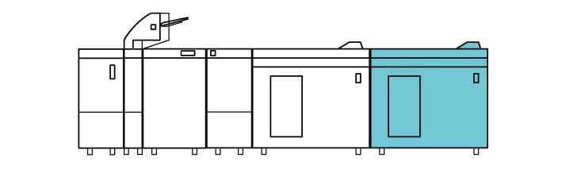
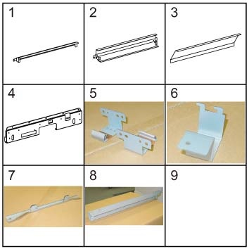
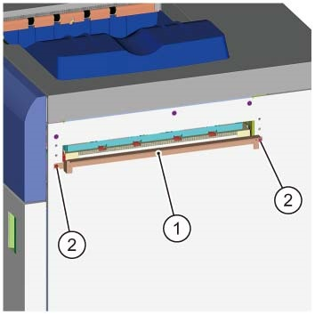
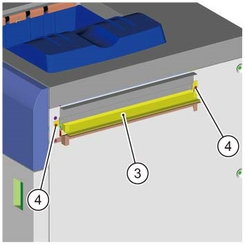
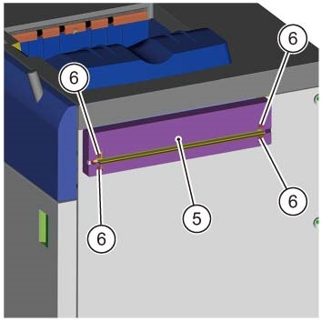
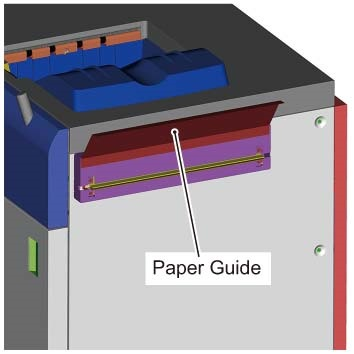
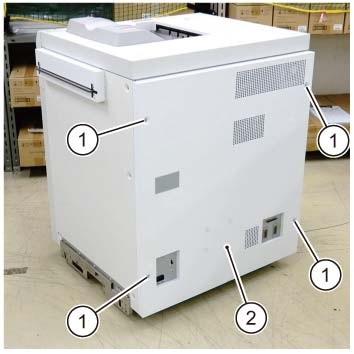
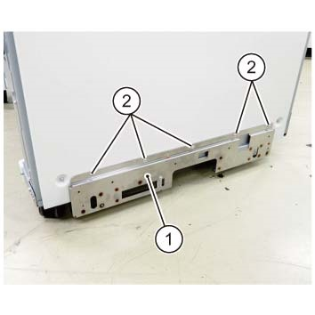
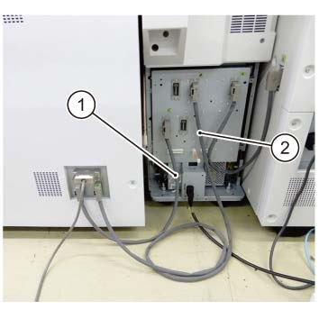

9.1.12.1 ...的安装 大容量堆叠器 (EDIM) 和 配套堆叠器推车 

(图 1) edm910001

EDIM安装, CDM 需要在上游安装.
请参阅 9.1.6.2 关于安装 堆叠器推车 (附加选件).
产品代码
EDIM
QD200146
电源线（3脚）: EM100188 (FB), FBAP/WW (Differs 取决于 the market. 请参阅 6.2.4.1 )
型号 | 组合 | 产品代码 |
|---|---|---|
Revoria 按下 PC1120 | I/F 电缆 (Middle 850mm: CDM+SEM+HCS+EDIM) | EM200289 (选件) |
Revoria 按下 PC1120 | I/F 电缆 (2100mm: CDM+SEM+HCS+EDIM) | EM200398 (选件) |
Revoria 按下 PC1120 | I/F 电缆 (EX 长: CDM+SEM+HCS+EDIM) | ED201502 (选件) |
Revoria 按下 PC1120 | I/F 电缆 (EX 长 4M: CDM+SEM+HCS+EDIM) | ED201503 (选件) |
安装步骤
打开 the package 该 comes 使用 EDIM 和 检查 bundled/separate order items.
EDIM - 随附物品 (图 2)
编号
名称
数量
1
下部 滑槽 导轨 (用于 后续 设备)
1
2
上部 滑槽 导轨 (用于 后续 设备)
1
3
纸张 导轨 (用于 后续 设备)
1
4
对接 板 (用于 后续 设备)
1
5
Earth 板
2
6
电源线 Protector 支架
1
7
对接 板
1
8
电缆 Duct
1
9
自攻螺钉 (M4)
13
10
螺钉 (M3)
2
11
电源线 (选件)
1
12
I/F 电缆 (短路) (选件)
1
13
I/F 电缆 (Middle) (可选的) (HCS+HCS)
1
14
I/F 电缆 (EX 长) (可选的) (用于 后续 设备)
1
那里 是 编号 示意图 notations 用于 编号9 和 编号14.
那里 是 编号 示意图 notations 用于 编号9 和 编号14.

(图 2) edm910002
堆叠器推车 (Cart 用于 大容量堆叠器) - 随附物品 (图 3)
编号
名称
数量
1
Caster
1
2
Handle
1
3
堆叠器 纸盘 (bundled 在 EDIM)
1
4
Clamper
1
5
螺钉 (Hexagonal 螺栓)
4
6
盖板
1
7
Holder
1
8
导轨
2
9
螺钉 (M3x6)
8

(图 3) sa90041
关闭IOT主机和打印服务器, 拔掉电源.
用于 如何 to 关闭电源, 请参阅 the 维修 手册 用于 IOT 和 打印服务器.
Peel 关闭/脱离 the securing tapes 从 the EDIM. (图 4)

(图 4) saw910001
打开 the 上部 盖板 和 peel 关闭/脱离 the securing tapes. (图 5)

(图 5) saw910002
打开 the 前面 门 和 拆卸 protective material. (图 6) (图 7)

(图 6) sa90047

(图 7) saw910003
Trace the tube (x4) 和 拆卸螺钉（x4）. (图 8)

(图 8) sa90042
拆卸 锁定 Guard. (图 9)

(图 9) sa90043
当...时 connecting a 后续 设备, 安装 滑槽 导轨 to 输出 章节 的 EDIM.
安装 下部 滑槽 导轨. (图 10)
拧紧螺钉 (M3: x2). (图 10)

(图 10) edm910004
安装 上部 滑槽 导轨. (图 11)
拧紧 the 螺钉 (M3: x2). (图 11)

(图 11) edm910005
安装 滑槽 盖板. (图 12)
拧紧 the 螺钉 (M3: x4). (图 12)

(图 12) edm910010
粘贴 纸张 导轨. (图 13)

(图 13) edm910006
安装 Earth Plates 到 EDIM. (图 14)
安装 Earth 板 (前面 侧面/后面 侧面: x2) 到 EDIM.
固定 the Earth 板 使用 自攻螺钉 (M4: x4) provided.

(图 14) sa90011
拆卸 EDIM 后面 盖板. (图 15)
拆卸 螺钉 (M4: x4).
拆卸后盖板.

(图 15) edm910007
安装 电缆 Duct. (图 16)
Loosely affix the 自攻螺钉 (M4: x2) provided 在 bundle.
安装 电缆 Duct 和 固定 it 和/与 螺钉 (M4: x2).
当...时 connecting 到 后续 设备, 通过 the I/F 电缆 和 电源线 通过 电缆 Duct in advance.

(图 16) sa90013
安装 对接 板 到 上游 模块. (图 17)
安装 对接 板 at 左侧 的 上游 模块.
固定 the 对接 板 使用 自攻螺钉 (M4: x2) provided.

(图 17) sa90056
安装 对接 板 用于 the Downstream 模块. (图 18)
安装 对接 板.
拧紧螺钉 (x5).

(图 18) edm910008
对齐 hooks 的 上游 模块 对接 板 到 对接 slots 的 EDIM 和 push it in 直到 they 锁定. (图 19)
同时, visually 确认 the gasket 的 Earth 板 seals properly 和/与 编号 gap.
If 那里 is 任何 gap 在 Earth 板 和 it 不 seal properly, or 如果 hooks 的 上游 模块 对接 板 请勿 match the 高度 的 对接 slots 的 EDIM, 执行 步骤 16 to 调整 高度 的 EDIM Caster.

(图 19) saw910010
Use the wrench 该 comes 使用 上游 模块 to 调整 高度 的 EDIM Caster as 所需的.
拆卸螺钉 (x1) 从 the 上游 模块 to extract the wrench. (图 20)

(图 20) cd910014
前面 Caster. (图 21)

(图 21) saw910019
后面 Caster. (图 22)

(图 22) sa90018
Use the wrench to 松开 the Securing 螺母. (图 23)
Use the wrench to 转动 Hexagonal 螺栓 和 调整 高度. (图 23)
Use the wrench to 拧紧 the Securing 螺母. (图 23)

(图 23) sa90019
固定 the Latch Stopper 的 EDIM. (图 24)
固定 the Latch Stopper 和/与 螺钉 (M3: x1) 从 the bundle.

(图 24) sa90020
固定 the EDIM by 其 feet (x2 位置 在后面). (图 25)
By using the wrench 该 comes 使用 上游 模块, 旋转 the Hexagonal 调整 螺栓 直到 the feet 是 touching the 接地, 和 加上 an extra 半/一半 转动 to 每个.
Use the wrench to 拧紧 the Securing 螺母 的 feet.

(图 25) sa90021
Reinstall the 后面 盖板.
连接电源线 到 EDIM. (图 26)
插头 电源线 进入 the 入口 的 EDIM.
安装 电源线 Protector 支架 using 螺钉 (M3: x1) 从 the bundle.

(图 26) sa90024
拆卸螺钉（x4）, 和 拆卸后下盖板 的 上游 模块. (图 27)

(图 27) cd910001
连接 CDM 到 EDIM by using the I/F 电缆 (短路/Middle). (图 28)
连接 (短路) the I/F 电缆.
连接 (Middle) the I/F 电缆.

(图 28) edm910009
安装 后面 下部 盖板 的 上游 模块. (图 29)
安装 后面 下部 盖板.
固定 the 后面 下部 盖板 by using 螺钉（x4）.

(图 29) sa910006
连接 CDM to IOT by using the I/F 电缆 (短路). (图 30)
连接 lattice 连接器 到 主机.
连接 lattice 连接器 to 连接器 (P305).

(图 30) ia90016
插头 电源线 的 EDIM 进入 电源 出口.
Assemble the 堆叠器推车.
安装 Holder 到 Caster using 螺钉 (M3x6: x3). (图 31)

(图 31) sa90044
安装 盖板 到 Holder using 螺钉 (M3x6: x3). (图 32)

(图 32) sa90045
安装 导轨 (x2) 到 Caster using 螺钉 (M3x6: x2). (图 33)

(图 33) sa90046
安装 Handle 到 Caster by using 螺钉 (Hexagonal 螺栓: x4). (图 34)

(图 34) sa90035
Mount 堆叠器 纸盘 到...上 the caster. 当...时 mounting 堆叠器 纸盘, 对齐 holes 的 Caster 使用 protrusions of 堆叠器 纸盘. (图 35)

(图 35) sa90036
安装 clamper 到 handle. 安装时 the clamper, hold the clamper at an 角度, 下部 it 使用 clamper stand clamped 到...上 the handle 和 安装 it 这样的 该 it presses the 执行器 下. (图 36)

(图 36) sa90037
如果 已 installed 当...时 the clamper 不是 pressing 下 在...上 执行器, the EDIM 前面 门 将不会 be able to 关闭 当...时 storing the 堆叠器推车 在 EDIM. (图 37)

(图 37) sa90038
打开 the EDIM 前面 门 和 store the 堆叠器推车 在 EDIM. (图 38)

(图 38) sa90039
打开 the 主机.
输入 the PC-诊断 和 change 以下 NVM.
自...以来 the EDIM/其他 modules 是 common products 使用 其他 型号, 以下 设置 需要 安装期间 和 NVM 初始化.
Change the 值 of NVM 769-223 (NVM 769-223 Dolly 纸张 检查) 从 "0: Disabled (默认)" to "1: Enabled".
当...时 the 值 保持 "0", rise 的 EDIM 堆叠器 不是 restricted. (当...时 纸张 exists on 堆叠器, 堆叠器 上升 当...时 the 前面 门 is opened. To restrict 此, 设置 值 to "1".
检查 操作 的 EDIM.
检查 状态 of 纸张 传输, 用于 异常 噪音, 和 等.
确认 纸张 不 get 卡住的, torn, contaminated, folded, or creased.
[在...期间 长 纸张 support]: If 错误 occurs, 执行 Steps 31 to 33.
[在...期间 长 纸张 support]: 关闭 the 主机 电源.
[在...期间 长 纸张 support]: 请参阅 以下 和 执行 adjustments.
9.1.5 接口 模块 D1 安装 Steps 25 to 28
[在...期间 长 纸张 support]: 打开 the 主机 电源 和 repeat 从 步骤 28.